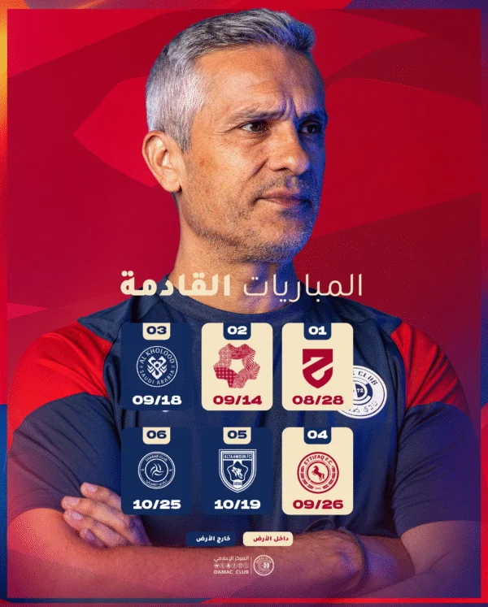
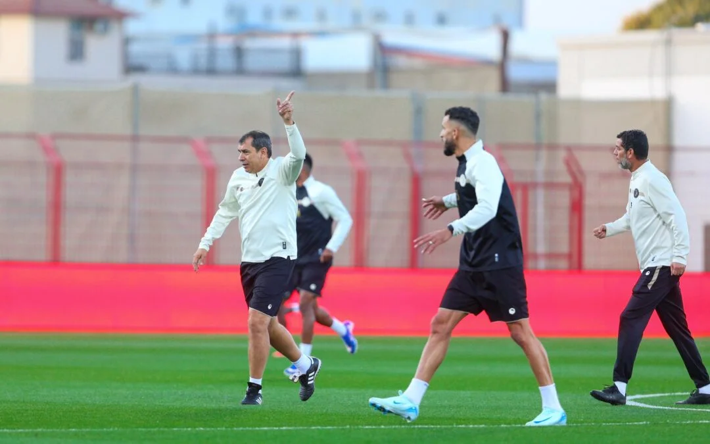
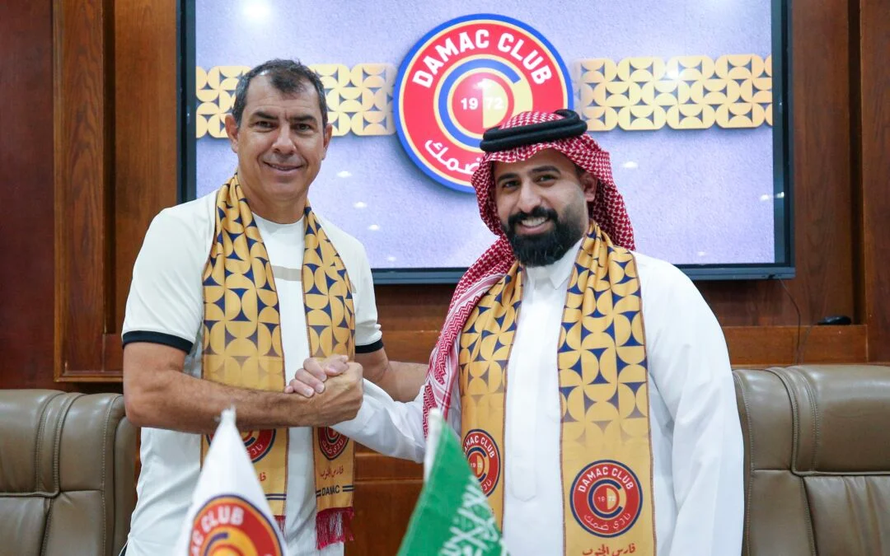

نادي ضمك نادي رياضي سعودي. من محافظة خميس مشيط في الجنوب الغربي من المملكة العربية السعودية...
عن النادي

ضمك – المركز الإعلامي اختتم الفريق الأول لكرة القدم بنادي ضمك تحضيراته الميدانية، الأربعاء، استعدادًا لمواجهة التعاون ضمن منافسات الجولة الـ22 من دوري روشن السعودي للمحترفين، والمقرر إقامتها مساء غدٍ، على ملعب النادي في خميس مشيط. وقاد الحصة التدريبية المدير...

ضمك – المركز الإعلامي تعاقدت إدارة نادي ضمك، برئاسة المهندس خالد آل مشعط، مع المدرب البرازيلي فابيو كاريلي لتولي مهمة تدريب الفريق الأول لكرة القدم، خلفًا للمدرب البرتغالي أرماندو إيفانجيليستا، وذلك في إطار سعي الإدارة إلى تحسين نتائج الفريق وتصحيح المسار الفني خلال...
لايوجد حتى الأن